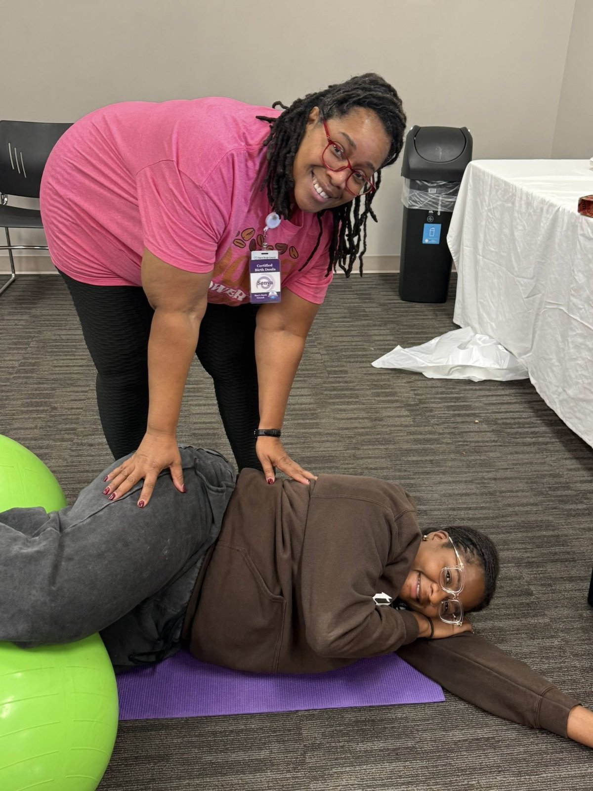
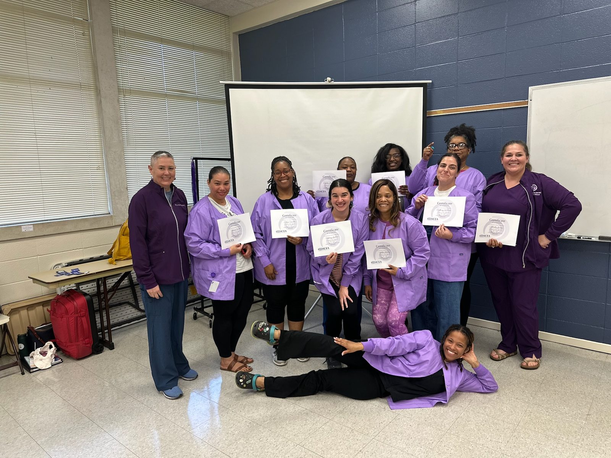
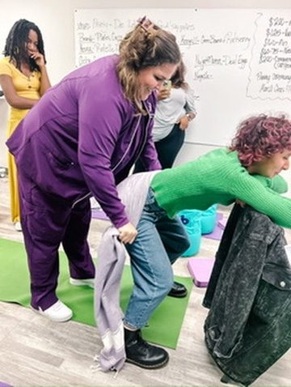
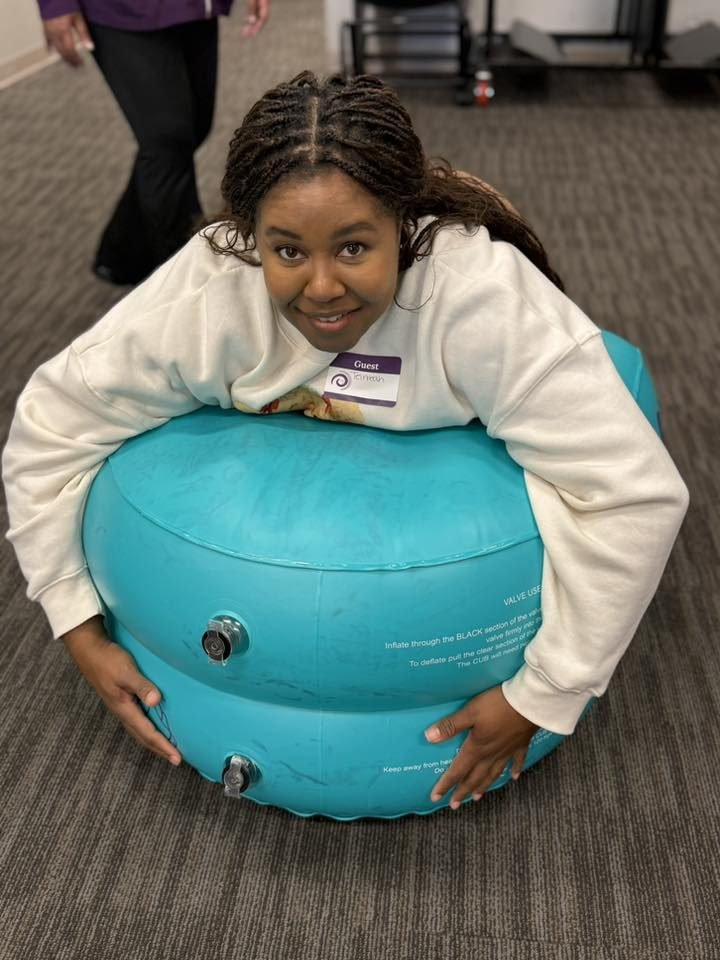
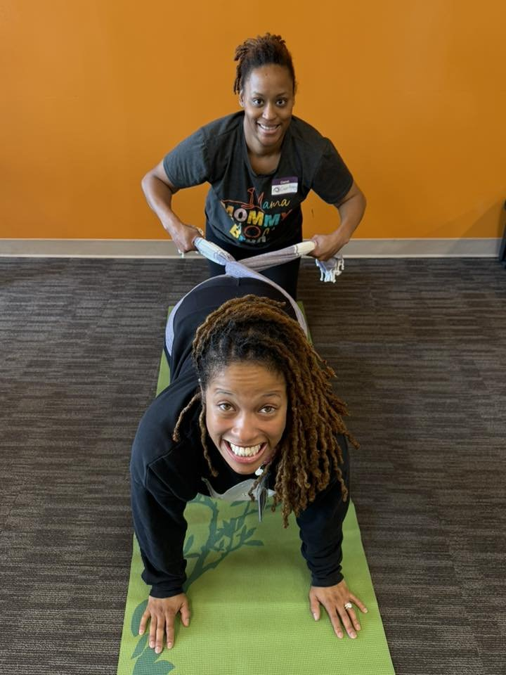
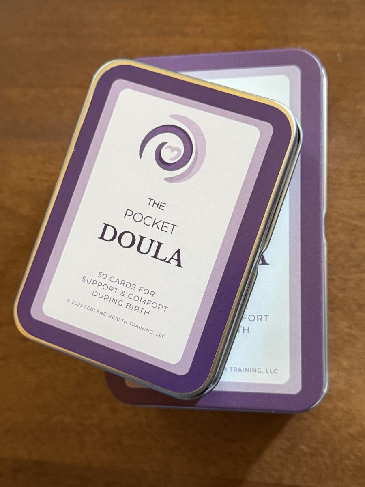
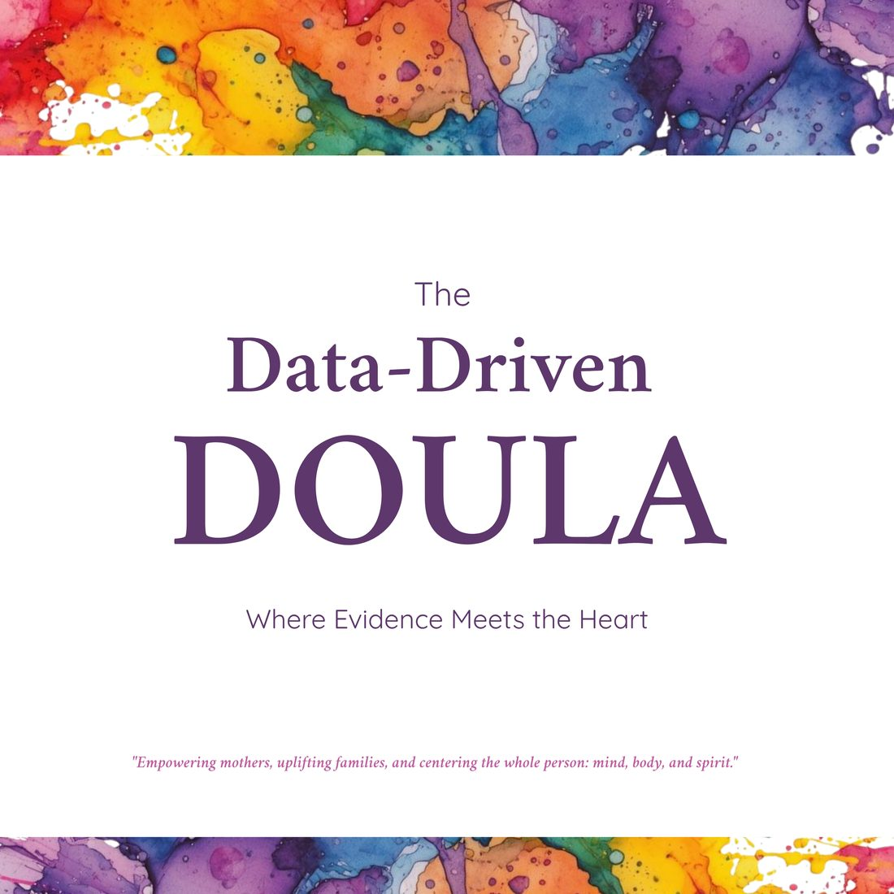

We educate the maternal health workforce.
ICEA-credentialed birth doula training, plus postpartum, bereavement, and breastfeeding specialties. Rooted in Louisiana, available to partners nationwide.



Hands-on, every cohort.
Real classroom moments and comfort-measure practice from our most recent trainings.




Five programs, one workforce.
Our birth doula training is the entry point and the most-requested. Beyond it, we offer postpartum, bereavement, breastfeeding, and customized curriculum for partner organizations.
Birth Doula Training
An ICEA-approved birth doula training. Hybrid or fully in-person formats, forty hours of training in total (24 live contact hours plus 16 hours of independent coursework), evidence-based curriculum developed by ICEA Approved Trainer Madeline LeBlanc, ICCE, ICBD, RN, IBCLC.
View upcoming classes- Physiology of birth and comfort measures
- Newborn care and postpartum mental health
- Scope of practice, BRAIN framework, SDOH screening
- Volunteer-track scholarships available
- Available in Spanish by request for partner organizations
Postpartum Doula Training
Specialty training for doulas who want to support families through the first weeks at home. Newborn care, infant feeding, sleep coaching, parental mental health, and the recovering mother.
- Postpartum physiology and recovery
- Infant feeding (breast, bottle, paced)
- Lactation support fundamentals
- Postpartum mood disorders and escalation
Bereavement Doula Specialty
An ICEA-approved specialty training for doulas, nurses, and birth workers who want to bear witness to families through pregnancy and infant loss. Fully online, self-paced, with six months of access and 16 ICEA CEUs.
- Trauma-informed care for pregnancy and infant loss
- Hardcover textbook + reflective workbook included
- Online & self-paced
Breastfeeding Education
Two complementary programs in development. Breastfeeding Basics for every birth worker; Breastfeeding Not-So-Basics for advanced cases. Curriculum designed by an IBCLC; first cohort dates announced soon.
- Latch, positioning, and the first hour
- Common challenges and when to refer to an IBCLC
- Returning to work and complex cases (advanced)
Customized Curriculum
We adapt our curriculum for hospitals, universities, and partner nonprofits, including Spanish-language delivery. Past partners include Franciscan Missionaries of Our Lady University, March of Dimes, Family Road of Greater Baton Rouge, the Diocese of Baton Rouge, and community organizations.
- CEU programming for nursing teams
- Spanish-language doula curriculum
- Workforce development partnerships
- On-site or hybrid delivery
The next section is specific to our flagship Birth Doula Training. Other specialties (postpartum, bereavement, breastfeeding) have their own structure. The full ICEA certification pathway lives on the class details page.
We meet you where you are.
For our birth doula training only, we offer three scheduling formats. Bereavement is fully online and self-paced; postpartum and breastfeeding programs have their own structure.
4 + 14 online nights + 1 in-person day
Weeknight evenings online plus a single in-person Saturday. Best for trainees with weekday work commitments who can travel only once. Format used by the Tau and Upsilon cohorts.
2 + 22 online nights + 2 in-person days
Two weeknight evenings online plus a full weekend of hands-on practice. Our most-requested format, used by past cohorts.
3 full in-person days
Three back-to-back days for organizations and groups that prefer immersive, fully in-person delivery. Often used for partner contracts.
Get our training materials directly.
Whether you’re joining a future cohort or training your own team, the texts, decks, and field guides our trainees use are available in our store.
The Pocket Doula deck, The Doula Lady’s Guide to Pregnancy, Childbirth, and Postpartum, the Bereavement Doula bundle, the Data-Driven Doula textbook, and the full Bereavement online course.
Visit the store


